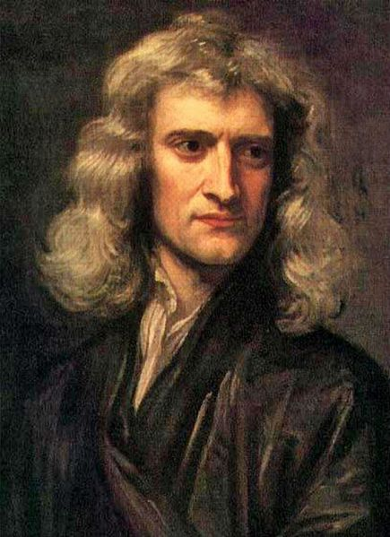

Isaac Newton

Isaac Newton est né le 25 décembre 1642 à Whoolsthorpe dans le Royaume d'Angleterre et mort le 20 mars 1727 à Kensington dans le royaume de Grande Bretagne.
Il est un philosophe, mathématicien, physicien, alchimiste, astronome et théologien anglais, puis britannique. Figure emblématique des sciences, il est surtout reconnu pour avoir fondé la mécanique classique, pour sa théorie de la gravitation universelle. En optique, il a développé une théorie de la couleur basée sur l'observation selon laquelle un prisme décompose la lumière blanche en un spectre visible. Il a aussi inventé le télescope à réflexion composé d'un miroir primaire concave appelé télescope de Newton.